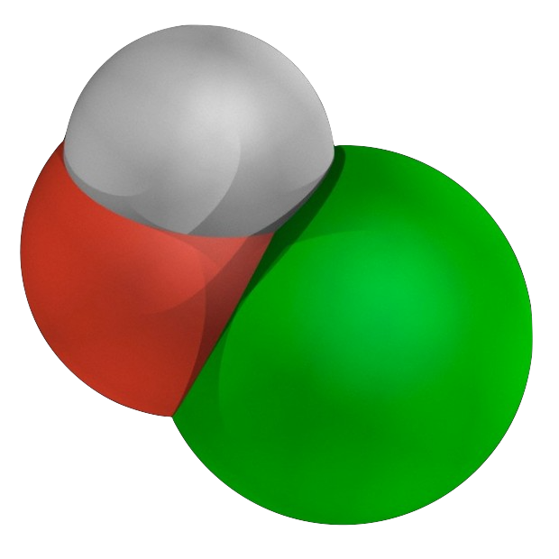
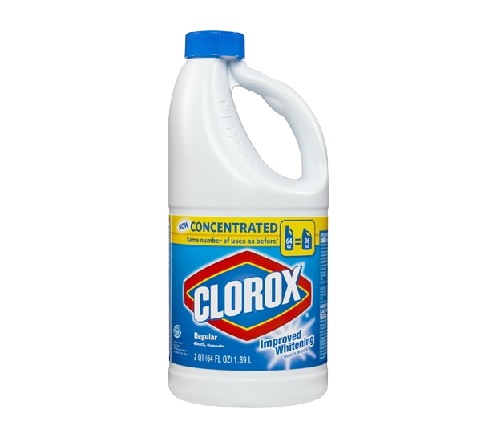

A positive sodium ion bonds ionically with the hypochlorite.
[Ne]3s1
Chlorine bonds covalently with oxygen to form a negative hypochlorite ion.
[Ne]3p5
Chlorine bonds covalently with oxygen to form a negative hypochlorite ion.
[He]2p4
Molecular Structure
Boiling point is high because ionic bonds keep atoms in very close proximity to one another.
The close ionic bond keeps the state of Sodium Hypochlorite fairly stable. The substance is almost always a liquid.

-->
Importance
Sodium hypochlorite is a common ingredient in bleach. If it's used improperly, it can cause serious harm
to the user by inducing severe chemical burns.
